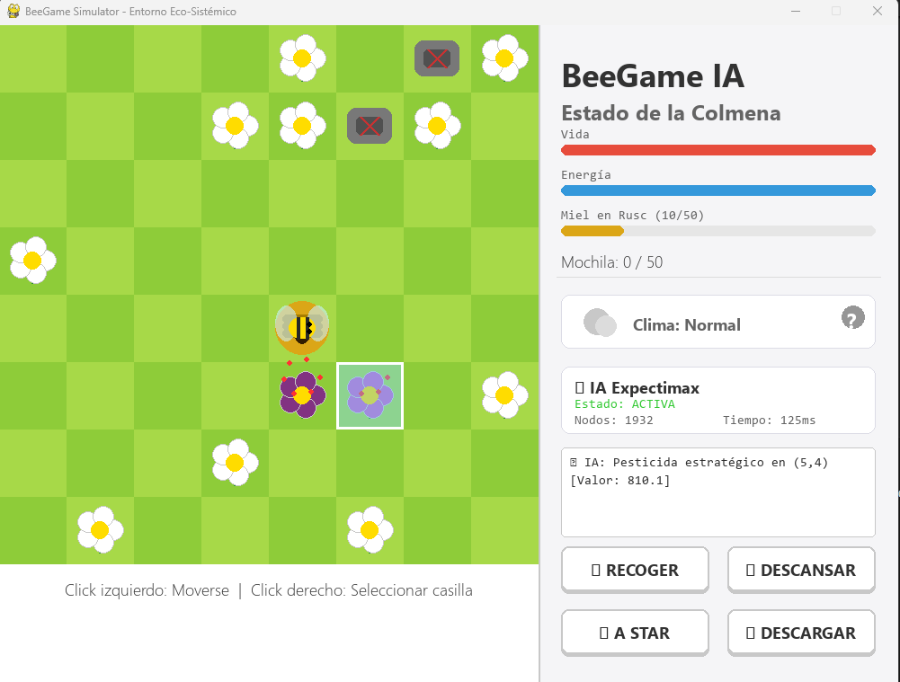

Simulación Ecológica con Inteligencia Artificial Simbólica
BeeGame es un juego de estrategia por turnos desarrollado en Python que simula la compleja relación entre las abejas y la actividad humana. El proyecto implementa algoritmos avanzados de Inteligencia Artificial Simbólica, incluyendo Expectimax con nodos de azar, búsqueda A* para pathfinding, y una función heurística multi-componente.
🌍 Objetivo Educativo: El juego busca concienciar sobre la importancia de las abejas y el medio ambiente a través de una experiencia interactiva, demostrando cómo los pesticidas y obstáculos ambientales afectan la supervivencia de estos insectos vitales para la polinización.
Toma de decisiones óptimas considerando probabilidades y nodos de azar para clima y reproducción.
Cálculo de rutas óptimas al rusc evitando obstáculos con heurística de distancia Manhattan.
Agente MAX (abeja) vs Agente MIN (humanidad) con restricciones de poda estratégica.
Sistema climático (lluvia, sol, normal) y reproducción de flores con probabilidades dinámicas.
Función de evaluación con 7 componentes ponderados para análisis de estados del juego.
Jugador manual, IA básica aleatoria, o Expectimax avanzado para ambos agentes.
Para ejecutar el juego localmente:
pip install pygamepython main.py📚 Conceptos de IA Aplicados: Este proyecto demuestra búsqueda informada (A*), extensión de Minimax con nodos probabilísticos (Expectimax), modelado de incertidumbre, poda estratégica, y optimización de funciones heurísticas con pesos ajustables.
El código está organizado profesionalmente en módulos: